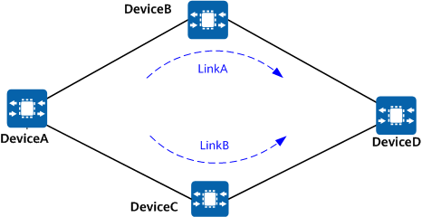

Understanding Association Between LDP and Static routes
On a network with a backup path between devices, packet loss may occur during a traffic switchover or switchback because the status of a static route is different from that of a Label Distribution Protocol (LDP) session. To resolve this problem, configure association between LDP and static routes.
Typical Networking
Figure 1 shows the typical networking for association between LDP and static routes. DeviceA and DeviceD interwork through static routes. Primary and backup static routes are deployed on DeviceA, with DeviceB and DeviceC as next hops. Primary and secondary LSPs are established through the static routes. The primary LSP uses LinkA, and the secondary LSP uses LinkB. In normal cases, LinkA is preferred. The following part describes association between LDP and static routes in switchover and switchback scenarios.

Switchover scenario
In the switchover scenario, traffic over the primary static route is not switched to the backup link when the LDP session on the primary link fails (not because of a link fault). As a result, LSP traffic over the primary link is interrupted.
When the LDP session is normal, LSP traffic travels along the primary link (LinkA: DeviceA -> DeviceB -> DeviceD). If the LDP session between DeviceA and DeviceB is interrupted, the LSP immediately switches to the backup link (LinkB: DeviceA -> DeviceC -> DeviceD). However, because the link between DeviceA and DeviceB is normal, traffic over the static route is not switched to the backup link. The asynchrony between LDP and the static route causes an LSP traffic interruption.
If association between LDP and static routes is enabled, traffic is automatically switched to the backup link when the LDP session goes down, ensuring uninterrupted traffic forwarding.
Switchback scenario
In the switchback scenario, after the primary link recovers from a fault, the traffic over the primary static route is switched back to the primary link earlier than the LDP LSP does. As a result, the secondary LSP cannot be used, and the primary LSP has not been set up yet, causing an LSP traffic interruption.
If the link between DeviceA and DeviceB fails, traffic is immediately switched to the backup link (LinkB: DeviceA -> DeviceC -> DeviceD). After the link between DeviceA and DeviceB recovers, traffic over the static route is immediately switched to the primary link (LinkA: DeviceA -> DeviceB -> DeviceD). As a result, the secondary LSP cannot be used, and the primary LSP has not been restored yet, causing a traffic interruption.
If association between LDP and static routes is enabled, the static route on LinkA becomes active only after the LDP session goes up during the switchback. In this manner, the static route and LDP are synchronous, preventing traffic loss.

Only the static routes with outbound interfaces specified can be associated with LDP.
Application Scenario
Association between LDP and static routes applies to the scenario where a backup static route exists between devices.
Benefits
Static routes are synchronized with LDP, preventing traffic loss and improving network reliability.